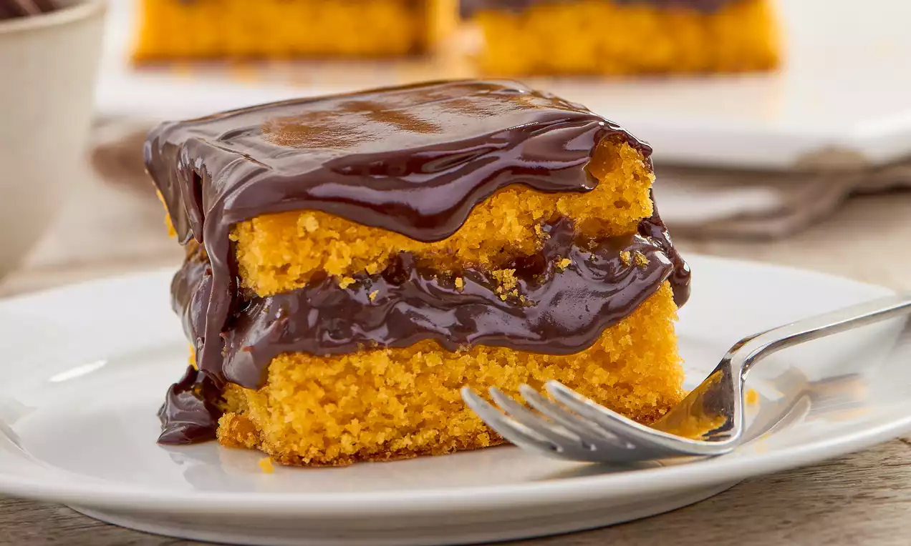

Uma receita fácil de fazer1 Veja os ingredientes passo a passo embaixo:
Ingredientes:
- 4 cenouras
- 2 Xícaras de Açúcar
- 2 Xícaras de Farinha de Trigo
- 4 Ovos
- 1/2 Xícara de oléo
- 1 Colher de Fermento em pó
Modo de Preparo
- Preaqueça o forno em 180°
- Bata no liquidificador a cenoura, os ovos, o oléo e o açúcar
- Em uma tigela, misture a farinha, o trigo e o fermento
- Adicione a mistura líquida, a mistura seca e mexa até formar uma massa homogênea
- Coloque em uma forma untada e asse por 40 minutos
Bolo de Cenoura
